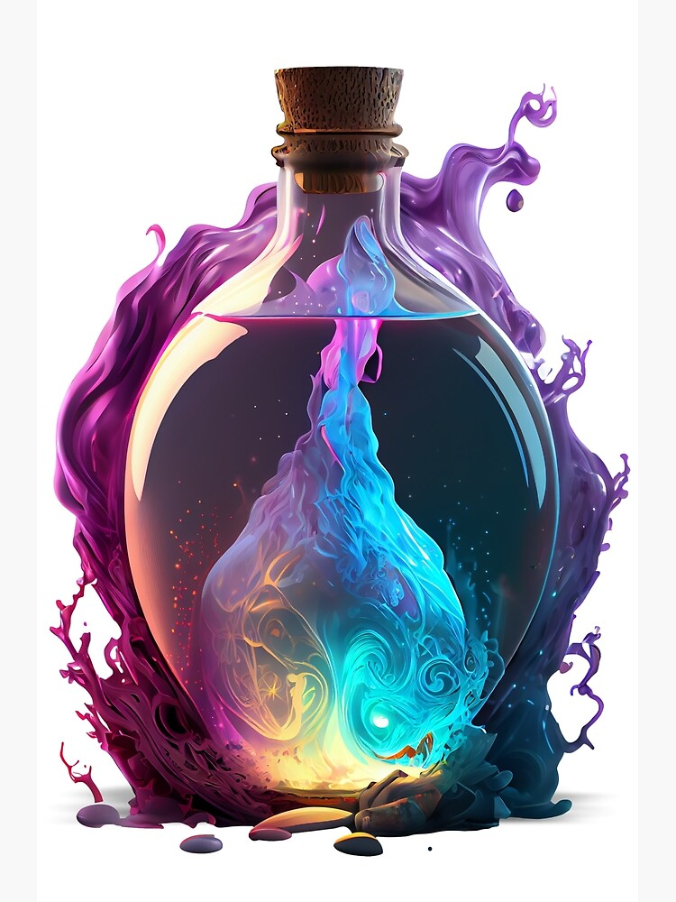

Miracle Invoker Potion

A sequence potion, upon drinking which you can gain magical powers. Magical powers of the world where destruction and madness reign supreme. Not ominous at all.
Ingredients:
- Small Crystal Crucible
- One Heart of a Dark Demonic Wolf
- 300 milliliters blood of Dark Demonic Wolf
- A Worm of Time
- A Worm of Star
If you have difficulty finding any ingredient, then contact your nearest
Mystery Herbal shop. Yes that shop whose shopkeeper wears an elegant crystal monocle over his right eye.
Steps:
- In the crystal crucible, add all the blood of Dark Demonic Wolf and heat.
- When the crucible temperature is 77 degree celsius, both Worms at once.
- After the solution turns pink and starts to bubble, add the Heart of a Dark Demonic Wolf
- Cut your artery, and drop your blood till solution turns into black, and in its middle, a whitish looking substance appears.
The potion is ready. If you are still alive after blood loss, then drink it. If you hear eldritch sounds and eyes grows on your limbs, then know it is totally normal, probably a hallucination.
Hmm, aa-hah! You are still sane enough to read further? As expected of the 'Miracle' Invoker Potion. Well, if you are reading this, then ignore that all your, friends, family and neighbors suddenly like to wear monocles over their right eyes. Maybe it is just a new fashion.